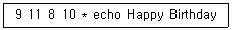
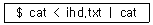
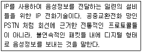
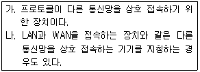
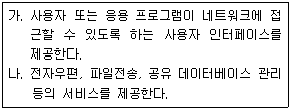
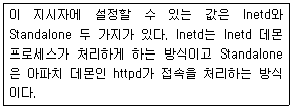

리눅스마스터-2급 (2008-01-20 기출문제)
1과목: 리눅스 운영 및 관리
1. ‘chmod ( ) spool.sh’를 사용하여 spool.sh 파일의 권한을 ‘rwxr-xr-x’로 만들고자 한다. ( )안에 알맞은 것은?
- 655
- 722
- 755
- 644
(정답률: 89%)

2. df에 대한 설명으로 틀린 것은?
- 하드 디스크의 용량을 디렉토리 별로 확인 가능 하다.
- 파일 시스템의 크기를 kilobyte 단위로 보려면 -k 옵션을 사용한다.
- 블록 사용 정보 대신 i-node 정보를 보고 싶으면 -i 옵션을 사용한다.
- 파일 시스템의 크기가 0인 것도 모두 보고자 할 때 -a 옵션을 사용한다.
(정답률: 57%)
3. 다음 중 리눅스 명령어의 설명을 간단하게 보여주는 것으로 알맞은 것은?
- vim
- whatis
- whereis
- which
(정답률: 67%)
4. 다음 파일의 소유자나 파일이 속한 그룹을 변경하는 chown명령어의 옵션 중 알맞은 것은?
- -c : 바뀌어지지 않는 파일에 대해서 오류 메시지를 보여준다.
- -f : 경로와 그 하위 파일들을 모두 바꾼다.
- -a : 바뀐 파일들에 대해서만 자세히 보여준다.
- -v : 명령의 결과를 자세히 출력한다.
(정답률: 59%)
5. 다음 중 새로이 만들어지는 파일이나 디렉토리의 접근권한(permission)을 제한하는 기능을 하는 명령어는 무엇인가?
- chmod
- umask
- chgrp
- chage
(정답률: 66%)
6. 파일 시스템의 상태를 점검하여 손상되거나 훼손된 파일이 있는 것을 찾고 이를 수정하고자 할 때 일반적으로 사용하는 명령어는?
- chkdsk
- check
- fsck
- scandisk
(정답률: 76%)
7. 다음 중 리눅스 파일 시스템의 종류와 그에 대한 설명으로 틀린 것은?
- minix : 과거 minix에서 사용되어졌던 파일 시스템으로 가장 오래되고 기본이 되는 파일 시스템이다.
- msdos : MS-DOS의 FAT 파일시스템과 호환을 지원하는 파일 시스템이다.
- umsdos : MS-DOS 파일 시스템을 리눅스상에서도 긴 파일과 소유자, 접근허가, 링크와 장치 파일등을 사용할 수 있도록 확장한 시스템 이다.
- hpfs OS/2 : minix의 제한이었던 파일이름과 파일시스템에 대한 제한을 보완한 minix 파일 시스템의 수정버전이다.
(정답률: 48%)
8. du 명령어에서 사용하는 옵션에 대한 설명으로 알맞은 것은?
- -a : 디렉토리내의 파일을 제외한 디렉토리만 보여준다.
- -k : 출력되는 단위가 KB(Kilo Byte)에서 Byte로 된다.
- -t : 하드 링드되어 있는 파일들까지 계산한다.
- -c : 마지막에 모든 파일 디스크의 사용량 합계를 보여 준다.
(정답률: 42%)
9. 파일의 소유주, 권한, 시간, 디스크에서의 위치 등의 정보를 담고 있는 특별한 종류의 디스크 블록을 무엇이라 하는가?
- s-code
- i-node
- j-node
- t-code
(정답률: 83%)
10. 컴퓨터에 새 하드디스크를 추가하여 리눅스 파일 시스템을 생성하고자 할 때 사용하는 명령어로 알맞은 것은?
- mkfs
- insmod
- chown
- fsck
(정답률: 79%)
11. 다음 중 프로세스에 대한 설명으로 틀린 것은?
- 프로세스의 가장 일반적인 정의는 실행중인 프로그램이라 할 수 있다.
- 하나의 프로세스가 수행을 마치기까지는 준비, 실행의 2가지 상태만 거치게 된다.
- 커널은 자신에게 등록된 프로세스들을 관리하기 위하여 프로세스마다 하나씩의 PCB를 할당해 준다.
- 프로세스의 '실행'상태는 프로세스가 CPU를 차지하고 있는 상태를 말한다.
(정답률: 62%)
12. 프로세스의 상태와 CPU 상태를 실시간으로 볼 수 있는 명령어로 알맞은 것은?
- top
- pstree
- ps
- cron
(정답률: 67%)
13. 리눅스 명령어 ps를 실행 하였을 때 보여 지는 프로세스 상태에 대한 설명으로 틀린 것은?
- R : 실행 중 혹은 실행될 수 있는 상태
- RSS : 실제 메모리 사용량
- PID : 프로세스 식별번호
- PRI : 부모 프로세스의 PID
(정답률: 69%)
14. 프로세스 중에서 background로 실행되면서 서버의 역할을 하거나 그 기능을 도와주는 프로세스로 알맞은 것은?
- 내부명령어
- shell
- daemon
- kernel
(정답률: 72%)
15. 백그라운드(background)로 실행되는 프로그램을 포그라운드(foreground)로 실행하기 위한 명령어로 알맞은 것은? (단, 해당 프로세스의 작업번호는 5이다.)
- fg %5
- fg &5
- bg #5
- bg $5
(정답률: 62%)
16. bash 쉘 상에서 pr 이라는 프로그램의 표준출력을 out.txt로 추가 저장하는 명령어로 알맞은 것은?
- pr > out.txt
- pr < out.txt
- pr >> out.txt
- pr << out.txt
(정답률: 59%)
17. 다음 중 명령어를 background에서 실행하기 위하여 명령어 뒤에 붙여 사용하는 문자로 알맞은 것은?
- !
- &
- $
- %
(정답률: 69%)
18. 프로그램의 표준 출력을 다른 프로그램의 표준 입력으로 보낼 때 사용하는 것으로 알맞은 것은?
- 파이프(pipe)
- 스택(stack)
- 큐(queue)
- 세마포어(semaphore)
(정답률: 68%)
19. 다음 중 프로세스 우선순위를 변경해야 할 필요가 있을 때 사용하는 명령어는?
- chprc
- nice
- chsh
- chjob
(정답률: 70%)
20. 다음의 crontab 파일의 내용에 대한 설명으로 알맞은 것은?

- 9월 11일 8시 10분에 echo Happy Birthday를 실행한다.
- 9시 11분, 8시 10분에 echo Happy Birthday를 실행한다.
- 10월 8일 오전 11시 9분 에 echo Happy Birthday를 실행한다.
- 9월 11일, 8월 10일에 echo Happy Birthday를 실행한다.
(정답률: 68%)
21. 다음 중 사용자의 로그인 Shell을 결정하는 파일로 알맞은 것은?
- /etc/ssh
- /etc/ttys
- /etc/passwd
- /etc/shadow
(정답률: 55%)
22. bash 쉘에서 .bashrc 파일에 대한 설명으로 알맞은 것은?
- bash 쉘에서 쉘 스크립트를 사용하려면 반드시 이 파일이 있어야 한다.
- 각 사용자가 자신만의 alias를 저장할 수 있다.
- .bashrc 파일을 수정하면 곧장 bash 쉘에 영향을 준다.
- bash 쉘을 실행하면서 수행했던 명령어들을 저장하는 파일이다.
(정답률: 46%)
23. 쉘(Shell) 변수에 대한 설명이 틀린 것은?
- SHELL : 현재 쉘의 이름
- TZ : date 명령에 대한 시간대
- PS1 : 쉘을 호출한 이후의 시간(초)
- TERM : 사용 중인 터미널의 유형
(정답률: 61%)
24. 다음 명령어를 실행했을 경우, 결과에 대한 설명으로 알맞는 것은?

- 기존 ihd.txt의 파일 내용이 삭제된다.
- 기존 ihd.txt의 파일 내용이 터미널에 출력된다.
- 기존 ihd.txt 파일에 ihd.txt 파일의 내용이 추가 기록된다.
- 기존 ihd.txt 의 파일 내용이 cat 이라는 이름의 파일에 저장된다.
(정답률: 49%)
25. Bash 쉘에서 설정되어 있는 PATH 환경변수에 ‘/etc/kde’ 이라는 새로운 값을 추가하기 위한 명령으로 알맞은 것은?
- PATH=/etc/kde
- PATH=$PATH:/etc/kde
- export PATH=/etc/kde
- export $PATH=$PATH:/etc/kde
(정답률: 59%)
26. bash 쉘(shell)의 히스토리(History)기능을 이용하여 바로 이전 명령을 재입력하고자 할 경우 사용하는 쉘 예약어로 알맞은 것은?
- !!
- #1
- ?1
- &1
(정답률: 65%)
27. 다음 리눅스 명령어 중 bash 쉘의 내장 (또는 내부) 명령이 아닌 것은?
- export
- clear
- cd
- pwd
(정답률: 36%)
28. 환경변수 PWD의 값에 대하여 설명한 것 중 알맞은 것은?
- 명령어를 찾는데 쓰이는 경로이다.
- 사용하는 터미널의 종류이다.
- 로그인한 사용자의 패스워드이다.
- 현재 작업 디렉토리이다.
(정답률: 76%)
29. vi 에디터에서 편집 중인 문서의 줄 번호를 보여주는 명령어는?
- :set nu
- :/set nu
- :?set nu
- :&set nu
(정답률: 74%)
30. vi 에디터를 실행 중에 작업 내용을 이전으로 되돌리기 위한 명령어는?
- a
- i
- u
- .
(정답률: 66%)
31. 텍스트 편집기인 pico에서 현재 커서 위치에 [Tab]를 삽입하기 위해 사용하는 단축키의 조합으로 알맞은 것은?
- Ctrl - T
- Ctrl - ^
- Ctrl - R
- Ctrl - I
(정답률: 28%)
32. vi 편집기에서 문장(단어)의 삭제키를 나타내고 설명한 것 중 틀린 것은?
- dG : 커서가 위치한 곳부터 그 파일의 맨 마지막 행까지의 모든 내용을 삭제
- D 또는 d$ : 커서가 위치한 곳부터 그 행의 맨 처음까지 삭제
- dd : 커서가 위치한 부분의 한 줄(line)삭제
- n(숫자)x : 현재 커서가 있는 곳에서부터 n으로 지정한 숫자만큼의 문자를 삭제
(정답률: 44%)
33. 다음 중 emacs 에디터에서 커서 이동 명령 중 설명이 틀린 것은?
- Alt + e : 문장 끝으로 이동
- Ctrl + v : 한 화면 뒤로 이동
- Alt + a : 문장 처음으로 이동
- Ctrl + e : 라인 끝으로 이동
(정답률: 50%)
34. 다음 vi 편집기 명령어 중 입력 모드로 전환 시키는 명령이 아닌 것은?
- X
- O
- I
- A
(정답률: 71%)
35. 다음 중 레드햇 패키지 관리자인 RPM의 용도에 대한 설명으로 틀린 것은?
- 새로운 소프트웨어 설치
- 설치된 소프트웨어 검증
- 설치된 소프트웨어 실행
- 설치된 소프트웨어 질의
(정답률: 50%)
36. rpm 패키지 설치시 의존성 검사를 하지 않고 설치 하고자 할때 사용하는 옵션으로 알맞은 것은?
- --nodeps
- --force
- --noreplacefiles
- --defaultPackage
(정답률: 67%)
37. 다음 중 RPM 명령을 사용하여 설치한 패키지를 제거하기 위해 사용하는 옵션으로 알맞은 것은?
- -d
- -q
- -i
- -e
(정답률: 53%)
38. # dpkg --install httpd와 같은 역할을 하는 rpm 명령은?
- # rpm -e httpd
- # rpm -p httpd-2.0.40-21.rpm
- # rpm -i httpd-2.0.40-21.rpm
- # rpm -V httpd
(정답률: 66%)
39. tar 파일로 묶여있는 ihd.tar파일의 압축을 풀고자 할때 사용하는 것은?
- tar cvf ihd.tar
- tar xvf ihd.tar
- tar uvf ihd.tar
- tar tvf ihd.tar
(정답률: 66%)
40. tar로 묶으면서 동시에 bzip2로 압축하는 방법으로 알맞은 것은?
- tar -cZvd
- tar -cjvf
- tar -xvfz
- tar -xSfz
(정답률: 56%)
41. gzip으로 압축되어 있는 텍스트 파일의 압축을 풀지 않고 내용만 볼 때 사용하는 명령어가 아닌 것은?
- zmore
- zless
- zcat
- ztail
(정답률: 39%)
42. 다음 중 RPM 패키지의 설치 진행 과정을 눈으로 확인할 수 있도록 연속적인 문자(#)로 그 과정을 보여주는 옵션으로 알맞은 것은?
- -i
- -h
- -s
- -v
(정답률: 50%)
43. 다음 중 프린터 설치에 관련된 여러 가지 사항이 기록되는 파일은?
- /etc/printcap
- /etc/system
- /etc/printcap.conf
- /etc/system.conf
(정답률: 46%)
44. 리눅스 설치 시 일반적인 프린터 설치 방법으로 틀린 것은?
- Local
- SMB
- Remote lpd
- PostScript
(정답률: 47%)
45. 리눅스 프린터에서 사용되는 명령어의 설명이 틀린 것은?
- lpc : 프린터가 현재 작업을 할 수 있는지 없는지에 관한 사항을 알려준다.
- lpq : 프린터큐의 상태를 모니터링할 수 있다.
- lprm : 프린터큐에 있는 인쇄 작업을 취소할 수 있다.
- lpr : 프린터 큐에 있는 인쇄 작업을 다시 인쇄 되도록 설정한다.
(정답률: 45%)
46. 시디롬 및 플로피 디스크 장치에 대한 mount pointer가 위치하는 디렉토리는?
- /mnt
- /etc
- /dev
- /boot
(정답률: 64%)
47. 다음 중 리눅스 사운드 드라이버의 4가지 유형에 포함되지 않는 것은?
- OSS
- RUTA
- OSS/Free
- ALSA
(정답률: 64%)
48. 리눅스에서 사용하는 동영상 재생 프로그램이 아닌 것은?
- mplayer
- gravis
- realplayer
- xine
(정답률: 40%)
2과목: 리눅스 활용
49. X윈도우의 특징에 대한 설명으로 틀린 것은?
- 네트워크 기반의 그래픽 환경이다.
- 서로 다른 기종을 함께 사용할 수 있다.
- 디스플레이 장치에 의존적이다.
- 사용자가 원하는 모양의 인터페이스를 만들 수 있다.
(정답률: 54%)
50. 리눅스에서 부팅 시 X윈도우를 기본설정으로 만들려고 할 때 수정 할 설정파일은?
- /etc/passwd
- /etc/inittab
- /etc/cron.d
- /etc/boot
(정답률: 64%)
51. 다음 중 Xlib의 상위 라이브러리인 Xtoolkit의 종류가 아닌 것은?
- XView
- Motif
- Xorg
- GTK
(정답률: 29%)
52. XFree86의 X 서버 설정과 가장 관계가 먼 것은?
- 프린터
- 마우스
- 모니터
- 그래픽카드
(정답률: 41%)
53. 다음 중 X윈도우를 강제로 종료하기 위한 키 조합으로 알맞는 것은?
- <Ctrl>-<Alt>-<Z>
- <Ctrl>-<Alt>-<Q>
- <Ctrl>-<Alt>-<C>
- <Ctrl>-<Alt>-<BackSpace>
(정답률: 54%)
54. 다음 중 단순히 윈도우의 외관을 관리하는 윈도우 매니저와는 달리 윈도우 매니저를 포함한 파일 매니저, 도움말 시스템, 제어판, 바탕화면 등의 다양한 도구를 제공하는 X윈도우 데스크톱 환경인 것은?
- COBA
- KDE
- Xaw
- XView
(정답률: 57%)
55. X 윈도우 그래픽 뷰어 프로그램으로 gif, tiff, jpg, bmp 등의 그래픽 파일 포맷을 지원하는 2차원 그래픽과 관련된 다양한 작업을 수행 할 수 있는 프로그램은?
- MTV
- BMP
- xv
- XMMS
(정답률: 32%)
56. 데스크톱 환경 중 하나인 GNOME에 대한 설명으로 틀린 것은?
- GNOME은 GNU N etwork Object M odel Environment의 약자이다.
- GTK+(GimpTool Kit +)라이브러리를 기반으로 만들어지고 있다.
- GNOME은 소스가 공개되어 있지 않으며 상용 프로그램으로서 구매 후 활용이 가능하다.
- GNOME은 패널, 표준 데스크톱 툴, 응용프로 그램 등과 서로 협동적으로 동작할 수 있도록 지원한다.
(정답률: 72%)
57. LAN의 구조 중 버스형 토폴로지(Topology)에 대한 설명으로 틀린 것은?
- 각 컴퓨터(노드)가 동등하며 단방향 통신이 가능하다.
- 논리적이며 둥글고 단방향인 포인트 투 포인트(Point to Point) 형태로 연결한다.
- CDMA/CD방식이 대표적이며 또한 토큰 패싱(Token Passing) 방식에 사용된다.
- 하나의 통신 회선에 컴퓨터(노드)를 접속하는 형태로 가장 일반적이다.
(정답률: 50%)
58. 다음은 무엇에 대한 설명인가?

- P2P(Peer-to-Peer)
- PPP(Point-to-Point Protocol)
- VoIP(Voice Over Internet Protocol)
- ATM(Asynchronous Transfer Mode)
(정답률: 74%)
59. 컴퓨터와 컴퓨터 사이에 통신이 가능하도록 하는 규약이며, 컴퓨터들끼리의 통신 표준을 프로토콜 이라 하는데, 다음 중 프로토콜의 기본 구성 요소가 아닌 것은?
- 구문
- 타이밍
- 의미
- 에러제어
(정답률: 62%)
60. 다음에 설명하는 통신장비는 어느 것인가?

- 라우터(Router)
- 리피터(Repeater)
- 브리지(Bridge)
- 게이트웨이(Gateway)
(정답률: 38%)
61. 다음은 OSI의 7계층 중 해당하는 계층은?

- 응용계층
- 데이터링크계층
- 네트워크계층
- 전송계층
(정답률: 58%)
62. 다음 중 TCP/IP의 특징으로 틀린 것은?
- 개방형 프로토콜 표준으로 특정 H/W나 OS에 독립적으로 자유롭게 사용 가능한 프로토콜이다.
- 일관성 있고 널리 사용 가능한 사용자 서비스를 위해서 표준화된 하이레벨의 프로토콜이다.
- 공통적인 주소체계 인터넷과 같은 거대한 네트워크에서도 TCP/IP장치를 유일하게 찾아낼 수 있는 공통적인 주소체계이다.
- 특정 물리적 네트워크 하드웨어에 대하여 종속적이며, 전화선외에 다른 종류의 물리적 전송 매체에서는 실행 불가능하다.
(정답률: 70%)
63. 다음은 유선 통신의 전송방식과 교환방식에 대한 설명이다. 회선교환방식의 특징이 아닌 것은?
- 전체 전송을 위해 전송로를 설립한다.
- 고정된 대역폭을 사용한다.
- 패킷은 배달될 때까지 저장 가능하다.
- 호출 후에는 오버헤드 비트가 없다.
(정답률: 41%)
64. 다음 중 프로토콜의 기본 기능이 아닌 것은?
- Sequencing/Ordering
- Flow Control
- Interrupt
- encoding
(정답률: 46%)
65. OSI모델은 국제표준협회(ISO)가 컴퓨터 통신구조의 모델과 향후 개발될 프로토콜의 표준적인 기반을 제공하기 위해서 개발한 것이다. 1계층에서 7계층을 순서대로 나열한 것은?
- 물리-표현-전송-네트워크-세션-데이터링크-응용
- 물리-데이터링크-네트워크-전송-세션-표현-응용
- 물리-네트워크-데이터링크-전송-세션-표현-응용
- 물리-전송-데이터링크-네트워크-표현-세션-응용
(정답률: 70%)
66. 리눅스에서 사용되어지는 대표적인 브라우저가 아닌 것은?
- 파이어폭스(Firefox)
- 오페라(Opera)
- 윈라(Winrar)
- 컹커러(Konqueror)
(정답률: 61%)
67. 다음 중 유엔 등 국제적인 특성을 가진 기관을 의미하는 최상위 도메인은 무엇인가?
- INT
- COM
- NET
- GOV
(정답률: 43%)
68. 메일을 받을 때 사용되는 가장 일반적인 프로토콜로 가장 알맞은 것은?
- POP3
- SMTP
- FTP
- WWW
(정답률: 58%)
69. 인터넷상에서 채팅을 즐길 수 있게 해주는 서비스로서 실시간으로 모든 사용자들과 대화를 나눌 수 있는 장점이 있다. 1989년 이후에 개발되기 시작했으며 클라이언트-서버 모델로 개발된 것은?
- LRC
- IRC
- TCP
- MSN
(정답률: 57%)
70. 파일전송을 위한 ftp의 명령어 중 로컬(local)에 있는 파일을 원격(remote)으로 보내기 위한 명령어는?
- mget
- ls
- put
- get
(정답률: 65%)
71. 몇 개의 비트가 호스트를 식별하는데 사용되는지를 나타내기 위하여 서브넷 마스크(Subnet Mask)를 사용한다. C 클래스를 식별하기위한 서브넷 마스크로 알맞은 것은?
- 255.0.0.0
- 255.255.255.0
- 255.255.0.0
- 255.255.255.255
(정답률: 79%)
72. IP 주소를 직접 입력하지 않고 부팅 시 서버로부터 받아 오는데 사용되는 프로토콜은?
- PPP
- IGMP
- DHCP
- ICMP
(정답률: 65%)
73. 다음은 인터넷 프로토콜별 포트번호를 나타낸다. 이중 포트번호가 틀린 것은?
- HTTP : 80
- SMTP : 25
- POP3 : 110
- SSH : 69
(정답률: 71%)
74. 다음은 아파치 설정 파일의 어느 지시자에 대한 내용인가?

- ServerRoot
- ServerType
- ServerFile
- ServerAdmin
(정답률: 45%)
75. 다음 중 기본 DNS서버를 변경하고자 할 때 수정해야 하는 파일은 무엇인가?
- /etc/hosts
- /etc/protocols
- /etc/resolv.conf
- /etc/named.conf
(정답률: 58%)
76. 리눅스 시스템에서 특정 서비스의 포트 번호가 정의되어 있는 파일은?
- /etc/services
- /etc/hosts
- /etc/ports
- /etc/initd
(정답률: 55%)
77. 다음 중 LAN(Local Area Network)의 일반적인 토폴로지라고 할 수 없는 것은?
- 버스(Bus)형
- 스타(Star)형
- 망(Mech)형
- 노드(Node)형
(정답률: 59%)
78. 임베디드 시스템에 있어서의 리눅스의 장점은?
- 사용자 층이 적어 기술 부가가치가 높다.
- Open Source, Open Architecture
- 병렬 컴퓨팅 가능
- 하드웨어 호환성은 문제가 있지만 개발비용이 낮다.
(정답률: 58%)
79. 리눅스 클러스터에 대한 설명으로 알맞은 것은?
- PC 와 network 장비를 사용함으로 비용이 증가한다.
- 다양한 CPU와 디바이스(device)를 지원하지 못한다.
- 다양한 사용자의 환경에 맞도록 클러스터를 제작할 수 없다.
- 다수의 저가 시스템을 이용하여 고성능의 시스템을 구현 할 수 있다.
(정답률: 61%)
80. FTP서비스에 접속하기 위해 주로 사용하는 익명 계정은 다음 중 어떤 것인가?
- quest
- user
- anonymous
- pid
(정답률: 70%)
설명: chmod 명령어는 파일이나 디렉토리의 권한을 변경하는 명령어이다. 권한은 숫자로 표현되며, 3개의 숫자로 이루어진다. 첫 번째 숫자는 소유자의 권한, 두 번째 숫자는 그룹의 권한, 세 번째 숫자는 기타 사용자의 권한을 나타낸다. 각 숫자는 4, 2, 1의 합으로 이루어지며, 각각 읽기, 쓰기, 실행 권한을 나타낸다. 따라서 755는 소유자는 읽기, 쓰기, 실행 권한이 모두 있고, 그룹과 기타 사용자는 읽기, 실행 권한만 있다는 것을 의미한다.